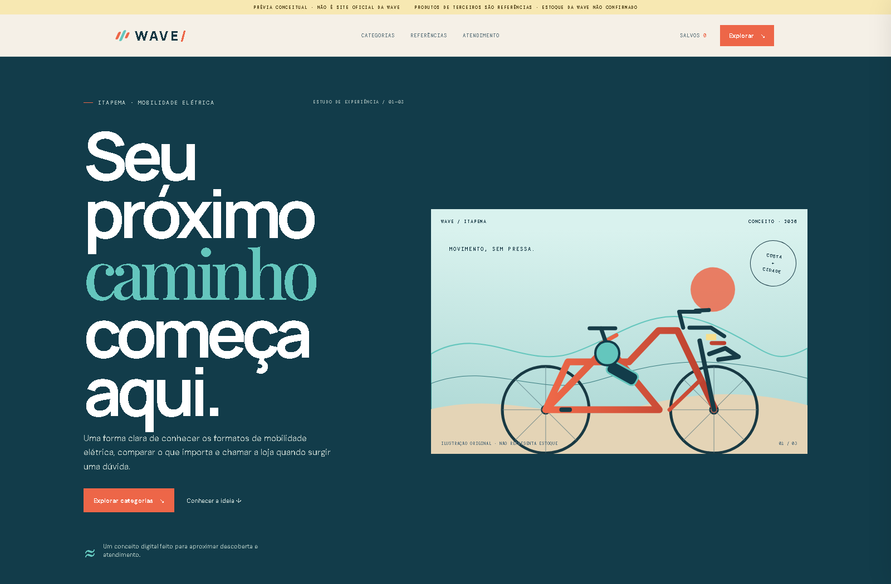
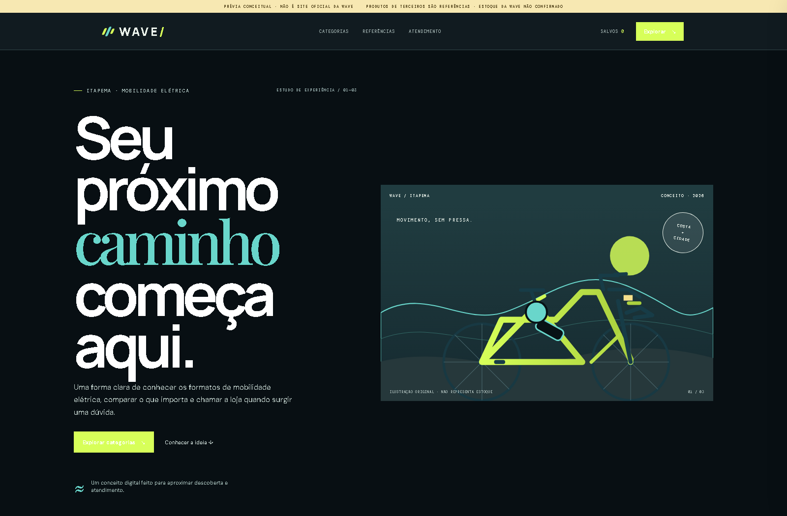
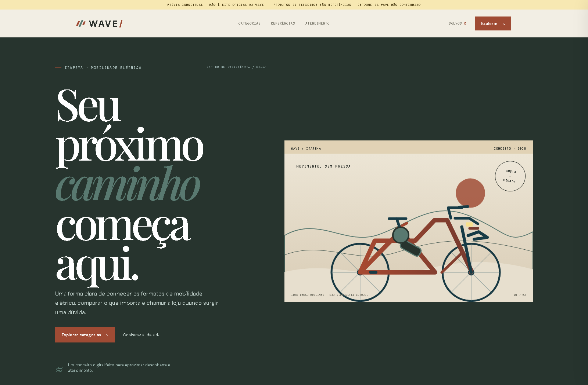
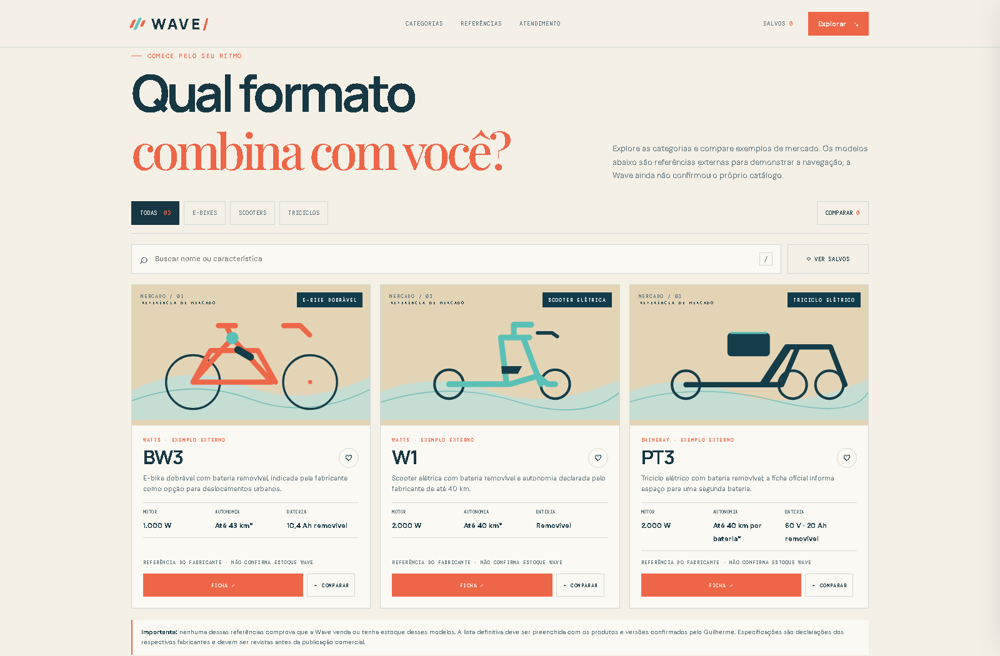

01 · COSTALEVE · LITORÂNEA
Paleta quente, verde-mar e coral. Uma leitura acolhedora que remete a Itapema e ao movimento urbano costeiro.
Uma experiência própria para apresentar categorias com clareza, ajudar na comparação e aproximar a descoberta do atendimento da Wave.

Paleta quente, verde-mar e coral. Uma leitura acolhedora que remete a Itapema e ao movimento urbano costeiro.

Contraste escuro com acento cítrico. Uma direção mais energética, com presença de tecnologia e ritmo.

Composição mais contida, tons de oficina e hierarquia editorial. Prioriza leitura e especificações.

Busca, filtros, itens salvos, ficha e comparação lado a lado; depois, um atalho leva a uma pergunta específica no WhatsApp para a equipe continuar o atendimento.
Exemplos de mercado de Watts e Shineray demonstram a navegação. Não confirmam que a Wave venda, represente ou tenha esses itens em estoque. Sem preço, estoque ou condições inventadas.